一、NoSQL
1.为什么用NoSQL?
- 单机MySQL的美好年代
- Memcached（缓存）+MySQL+垂直拆分
- MySQL主从读写分离
- 分表分库+水平拆分+MySQL集群
- MySQL的扩展性瓶颈
在memcached的高速缓存,MySQL的主从复制，读写分离的基础上，这时MySQL主库的写压力开始出现瓶颈，而数据量的持续猛增，由于MyISAM使用表锁，在高并发下会出现严重的锁问题，大量的高并发MySQL应用开始使用InnoDB引擎代替MyISAM。MySQL数据库也经常存储一些大文本字段，导致数据库表非常的大，在做数据库恢复的时候就导致非常的慢，不容易快速恢复数据库，比如1000w的4KB大小的文本就接近40GB的大小，如果能把这些数据从MySQL中省去，MySQL将变得非常得小，关系型数据库很强大，但是它并不能很好的适应所有的场景，MySQL的扩展性差（需要复杂的技术来实现），大数据下IO压力大，表结构更改困难，正是当前使用MySQL的开发人员面临的问题。
- 今天是什么样子？
- 为什么用NoSQL？
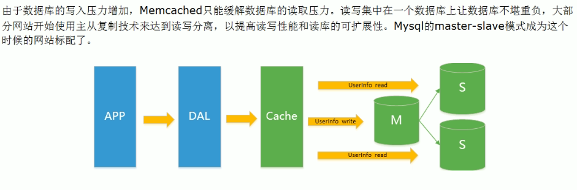
分库分表架构：
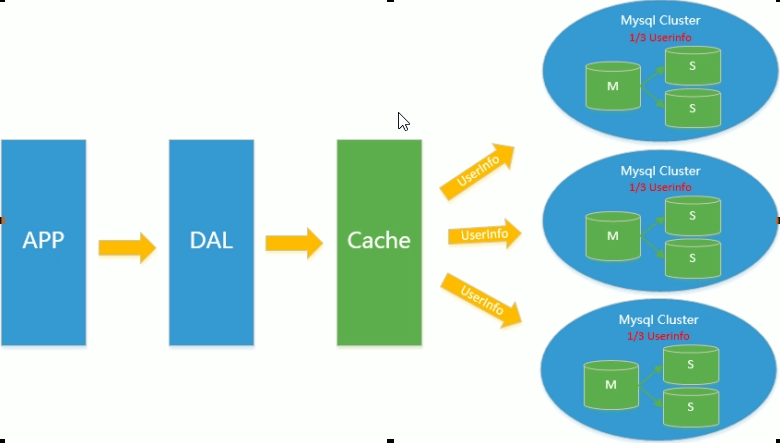
当前的架构：
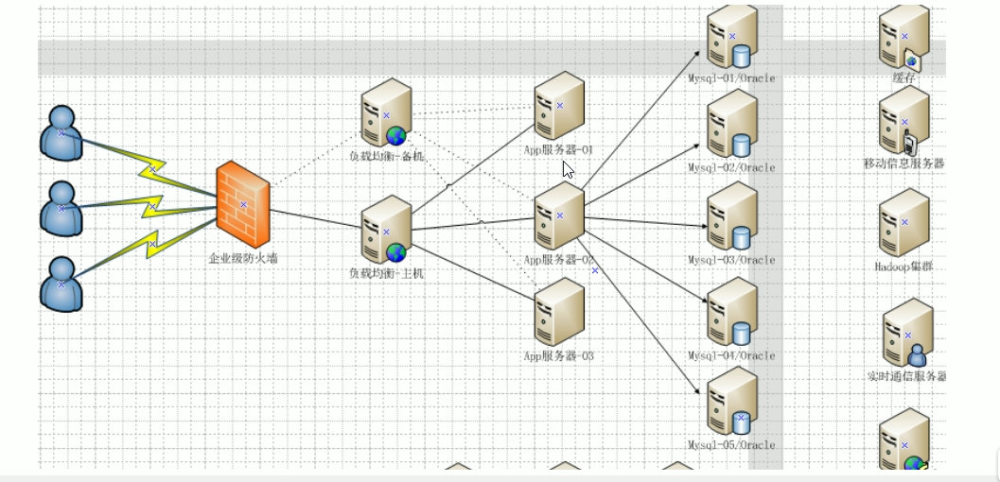
2.NoSQL数据库中的CAP
传统的ACID，而NoSQL中CAP：
CAP的理论核心：一个分布式系统不可能同时很好的满足一致性、可用性和分区容错性三个需求。最多同时比较好的满足其中两个。
因此，根据CAP原理将NoSQL数据库分成了满足CA原则，满足CP原则和满足AP原则三类：
- CA - 单点集群，满足一致性、可用性的系统，通常在可扩展性上不太强大
- CP - 满足一致性、分区容忍性的系统，通常性能不是特别高
- AP - 满足可用性、分区容忍性的系统，通常可能怼一致性要求较低
CAP理论就是说在当前的分布式存储系统中。最多只能实现上面的两点，而由于当前的网络硬件肯定会出现延迟丢包等问题，因此，分区容忍性是我们必须需要实现的。所以我们只能在一致性和可用性之间进行权衡，没有NoSQL系统能同时满足于三点。
- CA：传统Orcale数据库
- AP：大多数网站架构的选择
- CP：Redis、Mongodb
3.BASE
BASE就是为了解决关系数据库强一致性引起的问题而引起的可用性降低而提出的解决方案
- 基本可用 （Basically Avaliable）
- 软状态 （Soft state）
- 最终一致 (Eventually consistent)
它的思想是通过让系统放松对某一时刻数据一致性的要求来换取系统整体伸缩性和性能上改观。为什么这么说呢，缘由就在于大型系统往往由于地域分布和极高性能的要求，不可能采用分布式事务来完成这些指标，要想获得这些指标，我们必须采用另外一种方式来完成，这里BASE就是解决这个问题的办法。
二、Redis
1.Redis特点：
- Redis支持数据的持久化，可以将内存中的数据保持在磁盘中，重启的时候可以再次进行加载使用
- Redis不仅仅支持简单的key-value类型的数据，同时还支持list、set、zset、hash等数据结构的存储
- Redis支持数据的备份，即master-slave模式的数据备份
2.Redis能干嘛
Redis能干嘛：
- 内存存储和持久化：redis支持异步将内存中的数据写到磁盘上，同时不影响继续服务
- 取最新N个数据的操作，如：可以将最新的10条评论的ID放在redis的List集合里面
- 模拟类似于HttpSession这种需要设定过期时间的功能
- 发布、订阅消息系统
- 定时器、计数器
3.Redis怎么玩
Redis怎么玩：
1.数据类型、基本操作和配置
2.持久化和复制，RDB/AOF
3.事务的控制
- …..
4.具体知识
- 单进程：单进程模型来处理客户端的请求，对读写等事件的响应是通过对epoll函数的包装来做到的，Redis的实际处理速度完全依靠主进程的执行效率，epoll是Linux内核为处理大批量文件描述符而做了改进的epoll，是Linux下多路复用IO接口select/poll的增强版本，它能显著提高程序在大量并发连接中只有少量活跃的情况下的系统CPU利用率。
- 默认16个数据库，类似数组下表从0开始，初始默认使用零号库
- select 命令切换数据库
- Dbsize查看当前数据库的key的数量
- Flushdb：清空当前库
- Flushall：通杀全部库
- 统一密码管理，16个库都是同样密码，要么都OK要么一个也连接不上
- Redis索引都是从0开始
- 为什么默认端口是6379
5.Redis的数据类型
- Redis五大数据类型
- Redis键（key）和值（value）
- Redis字符串：是最基本的类型，可以理解为memcached一模一样的类型，一个key对应一个value，redis的string可以包含任何数据，比如jpg图片或者序列化对象
1 | 1 redis 127.0.0.1:6379> SET name "hello" |
- Redis 列表（list） 简单的字符串列表，底层是个链表，按照插入顺序，你可以添加一个元素到列表的头部（左边）或者尾部（右边）
1 | redis 127.0.0.1:6379> lpush listtest test1 |
- Redis 集合 （Set） string类型的无序集合，通过HashTable实现的
1 | redis 127.0.0.1:6379> sadd setdemo set1 |
- Redis 哈希 （Hash）是一个键值对集合，是一个String类型的field和value的映射表，hash特别适合用于存储对象
1 | redis 127.0.0.1:6379> HMSET user:1 username testname password 123456 |
- Redis有序集合Zset（sorted set）string类型的集合并且无重复，不同的是每个元素都会关联一个double类型的分数，redis正是通过分数来为集合中的成员进行从小到大排序，zset的成员是唯一的，但是分数(score)是可以重复的
1 | redis 127.0.0.1:6379> zadd list 0 name1 |
6.Redis的配置文件
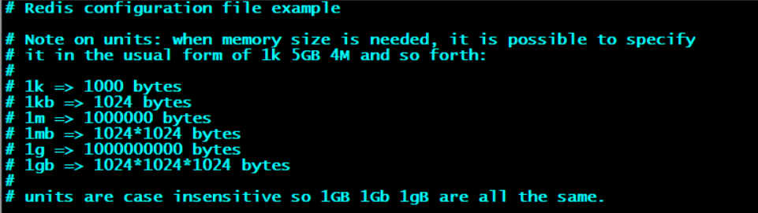
- 配置大小写单位，开头定义了一些基本的度量单位，只支持bytes，不支持bite
- 对大小写不敏感
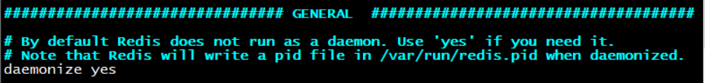
redis默认不是以守护进程的方式运行，可以通过配置修改该项，使用yes启用守护进程
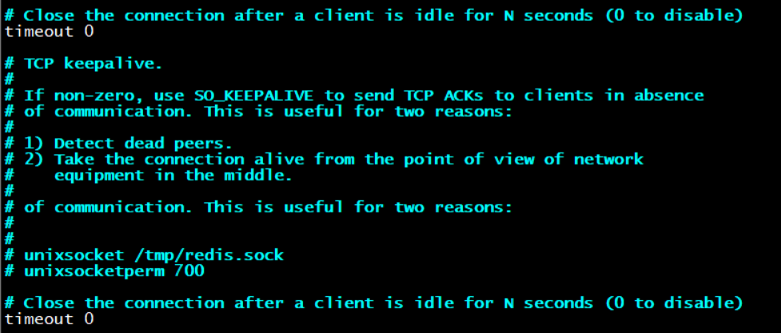
当客户端闲置多长时间后关闭连接，设置timeout，默认为0表示永远不断开连接即关闭该功能
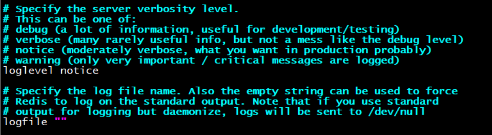
指定日志级别记录，redis支持四个级别，默认为verbose
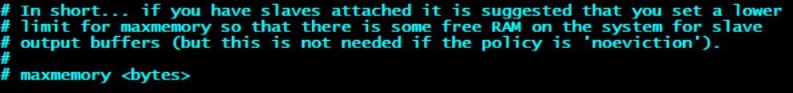
指定redis的最大内存限制，redis在启动时会将数据加载到内存中，达到最大内存后，redis会尝试清楚已到期或者即将到期的key，当此方法处理后，仍然达到最大内存设置，将无法再进行写入操作，但仍然可以进行读取操作，redis信的vm机制，会将key放进内存中，value放进swap区
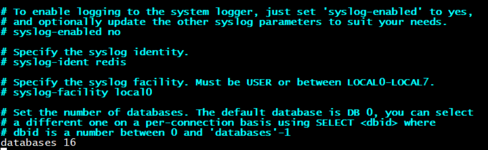
默认为16个数据库
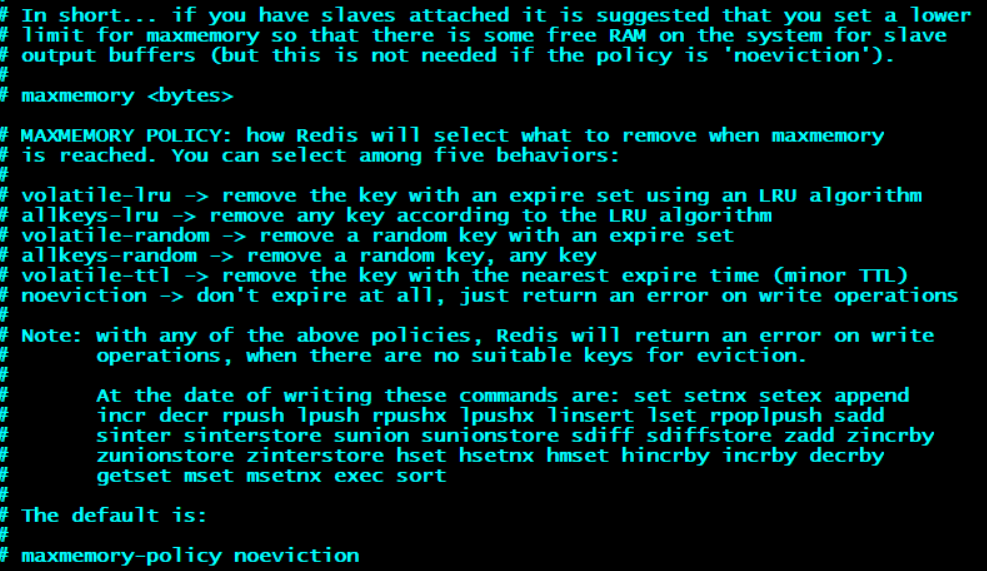
缓存过期清理策略，默认是永不过期，但是实际测试生产的时候肯定不会用默认配置
（1）volatile-lru：使用lru算法移除key，只对设置过期时间的建
（2）allkeys-lru：使用lru算法移除key
（3）volatile-random：在过期集合中移除随机的key，只对设置了过期时间的键
（4）allkeys-random：移除随机的key
（5）volatile-ttl：移除那些ttl值最小的key，即那些最近要过期的key
（6）noeviction：不进行移除，针对写操作，只是返回错误信息
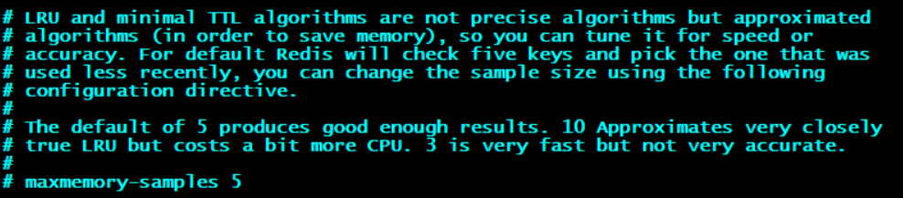
设置样本数量，默认为5个
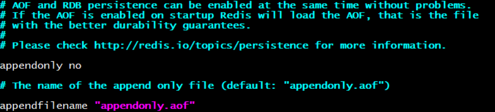
appendonly no指定是否在每次更新操作后进行日志记录，redis在默认情况下是异步的把数据写入磁盘，如果不开启，可能会在断电时导致一段时间内的数据丢失，因为redis本身同步数据文件是按上面save条件来同步的，所以有的数据会在一段时间内只存在于内存中，默认为No
appendfilename指定更新日志文件名
指定更新日志条件共有三个值可选
7.Redis的持久化策略
RDB：redis database
AOF：append only file
（1）RDB
在指定的时间间隔内将内存中的数据快照写入磁盘。也就是进行snapshot快照，它恢复时是按照快照直接读到内存里。
是什么
redis会单独创建(fork)一个子进程来进行持久化，会先将数据写入到整个过程中，主进程是不进行任何IO操作的，这就确保了极高的性能，如果需要进行大规模数据的恢复，且对于数据恢复的完整性不是非常敏感，那RDB方式要比AOF方式更加的高效，RDB的缺点是最后一次持久化的数据可能丢失。
Fork：fork的作用是复制一个与当前进程一样的进程，新进程的所有数据（变量、环境变量、程序计数器等）数据都和原进程一致，但是是一个全新的进程，并作为原进程的子进程
RDB保存的是dump.rdb文件，以下是redis.conf中RDB的配置文件：
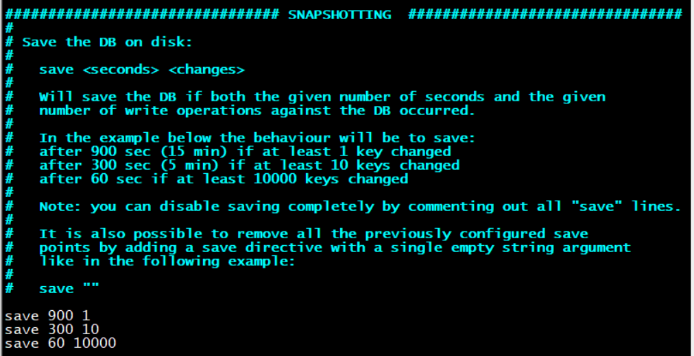
RDB是整个内存的压缩过的snapshot，RDB的数据结构，可以配置复合的快照触发条件，默认： 1分钟改了10000次
或5分钟改了10次
或15分钟改了1次
SNAPSHOTTING快照
(1) save：save <秒钟> <写操作次数> 禁用
(2）stop-writes-on-bgsave-error：如果配置为no，表示你不在乎数据的一致性或者有其他的手段发现和控制
(3）rdbcompression：对于存储到磁盘中的快照，可以设置是否进行压缩存储，如果是的话，redis会采用，如果你想消耗cpu内存的话，可以关闭此功能
(4）rdbchecksum：在存储快照后，还可以让redis使用crc64算法来进行数据校验，但是这样会增加大约10%的性能消耗，如果希望得到最大的性能提升，可以关闭此功能
(5）dbfilename：dump.rdb
(6) dir：文件位置
如何触发RDB快照：
（1）配置文件中默认的快照配置：冷拷贝dump.rdb后重新使用
（2）命令save或者是bgsave
save：save只管保存，其他的不管
bgsave：redis会在后台异步进行快照操作，快照同时还可以响应客户端请求，可以通过 lastsave命令获取最后一次成功执行快照的时间
（3）执行flushall命令，也会产生dump.rdb文件，但是里面是空的，没有意义
RDB的优势与劣势
优势：适合大规模的数据恢复，对数据完整性和一致性要求不高
劣势：(1) 在一定时间间隔做一次备份，所以如果redis意外down掉的话，就会丢失最后一次快照后的所有修改。
(2) Fork的时候，内存中的数据被clone了一份，大致2倍的数据膨胀需要考虑 如何停止：动态
停止RDB保存规则的方法：redis-cli config set save “”
RDB小结
（1）RDB是一个非常紧凑的文件
（2）RDB保存RDB文件时父进程唯一需要做的就是fork出一个子进程，接下来的工作全部由子进程来做，父进程不需要再做其它IO操作，所以RDB持久化方式可以最大化redis性能
（3）与AOF相比，在恢复大的数据集的时候，RDB方式会更快一些
（4）数据丢失风险更大
（5）RDB需要经常fork子进程来保存数据集到硬盘上，当数据集比较大的时候，fork的过程时非常耗时的，可能会导致redis在一些毫秒级不能响应客户端的请求。
（2）AOF
是什么
以日志的形式来记录每个写操作，将redis执行过的所有写指令记录下来（读操作不记录），只许追加文件但不可以改写文件，redis启动之初会读取该文件重新构建数据，换言之，redis重启的话就根据日志文件的内容将写指令从前到后执行一次以完成数据的恢复工作。
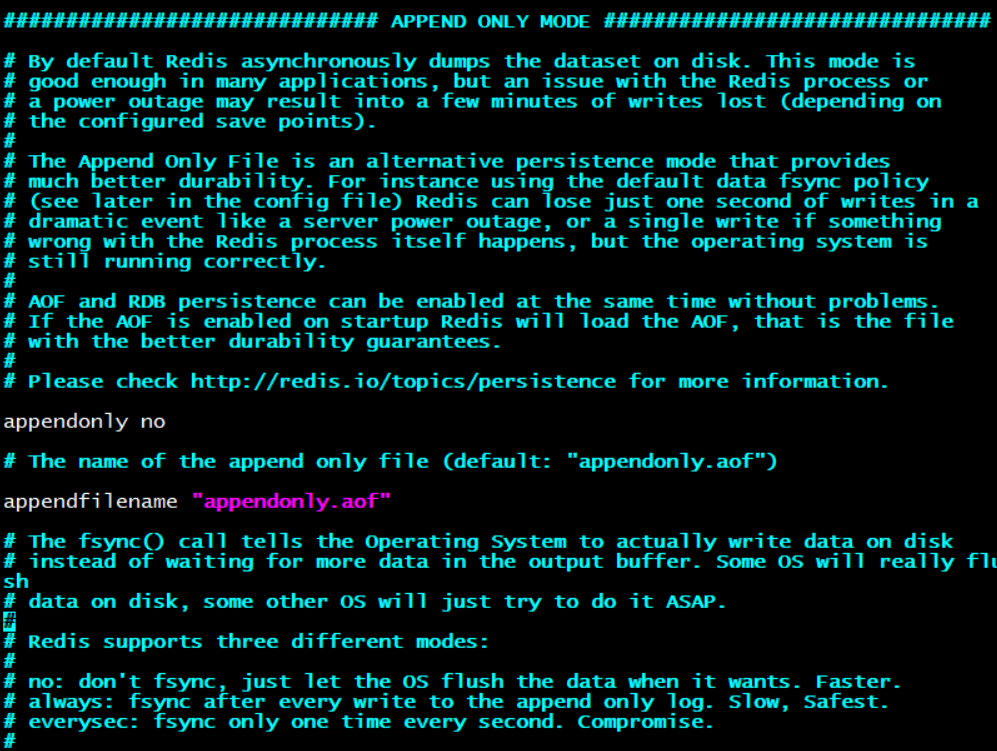
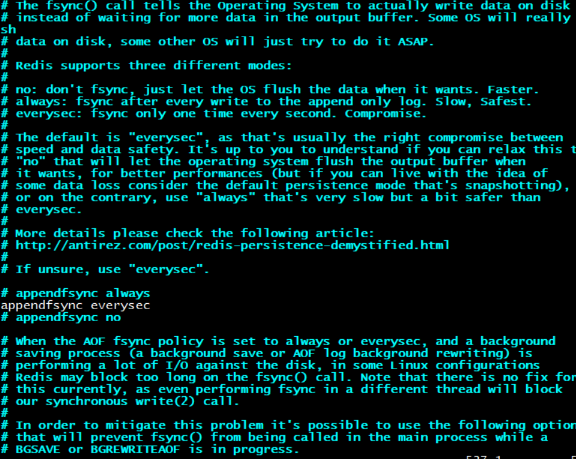
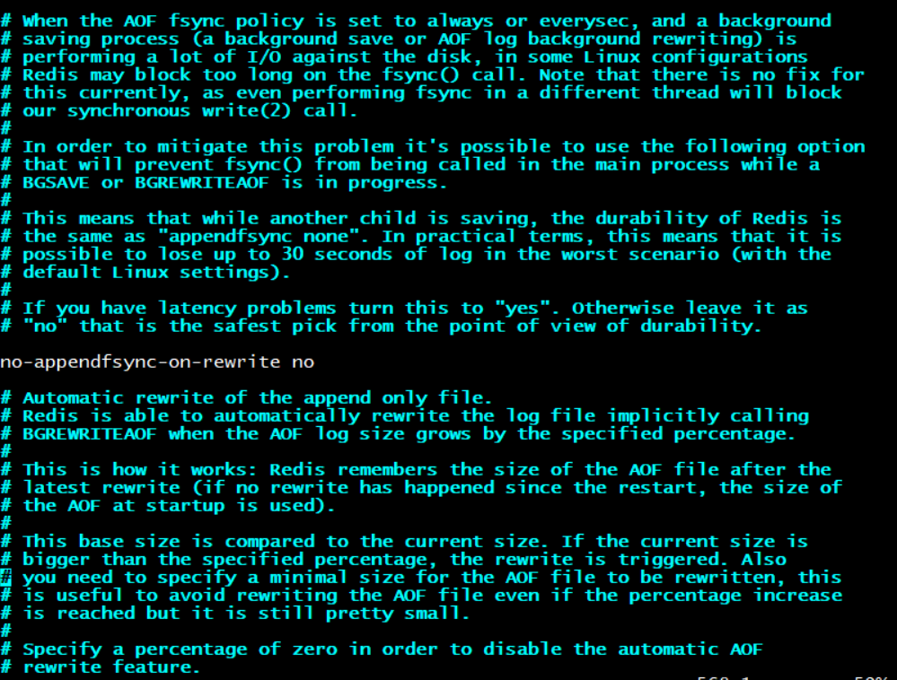
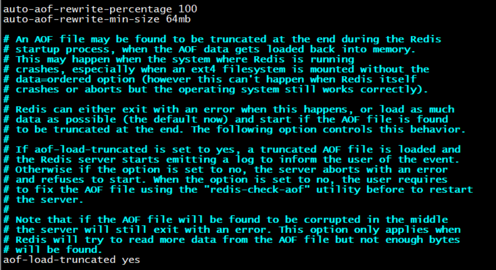
redis-check-aof --fix appendonly.aof 可以执行修复AOF文件，将不符合AOF文件格式的都清除掉，可用于病毒、断电、丢包等情况。
参数设置
appendonly: yes表示打开AOF策略
appendfilename：保存的文件名，一般保持默认即可
appendfsync：
- Always：同步持久化，每次发生数据变更时会被立即记录到磁盘，性能较差但数据完整性比较好
- Everysec：出厂默认设置，异步操作，每秒记录 如果一秒内宕机，有数据丢失。
- No
no-appendfsync-on-write：重写时是否可以运用Appendfsync，用默认no即可，保证数据安全性
auto-aof-rewrite-min-size：设置重写的基准值
auto-aof-write-percentage：设置重写的基准值
AOF启动/恢复/修复
正常恢复：
- 启动：设置yes，修改默认的appendonly no 改为yes
- 将有数据的aof文件复制一份保存到对应的目录（config get dir）
- 恢复：重启redis然后重新加载
异常恢复：
- 启动：设置yes
- 备份被写坏的AOF文件
- 修复：redis-check-aof –fix 进行修复
- 恢复：重启redis然后重新加载
Rewrite功能
是什么：AOF采用文件追加方式，文件会越来越大为避免出现这种情况，新增了重写机制，当AOF文件的大小超过所设定的阈值的时候，Redis就会启动AOF文件的内容压缩，只保留可以恢复数据的最小指令集，可以使用命令bgrewriteaof
重写原理：AOF文件持续增长而过大时，会fork出一条新进程来将文件重写（也是先写临时文件最后再rename），遍历新进程的内存中数据，每条记录会有一条set语句，重写aof文件的操作，并没有读取旧的aof文件，而是将整个内存中的数据库内容重写一个新的aof文件，这点和快照有点类似
触发机制：Redis会记录上次重写时的AOF大小，默认配置是当AOF文件大小是上次rewrite后大小的一倍且文件大于64M时触发
AOF的优势
每秒同步：appendfsync always 同步持久化，每次发生数据变更时会被立即记录到磁盘，性能较差但数据完整性比较好
每修改同步：appendfsync everysec 异步操作，每秒记录 如果一秒宕机，有数据丢失
不同步：appendfsync no 从不同步
AOF的劣势
- 相同数据集的数据而言aof文件要远大于rdb文件，恢复速度慢于rdb
- AOF运行效率要慢于RDB，每秒同步策略效率较好，不同步效率和RDB相同
AOF小结
- AOF文件是一个只进行追加的日志文件
- Redis可以在AOF文件体积变得过大时，自动地在后台对AOF进行重写
- AOF文件有序地保存了对数据库执行的所有写入操作，这些写入操作以redis协议的格式保存，因此AOF文件的内容非常容易被人读懂，对文件进行分析也很轻松
- 对于相同体积的数据集来说，AOF文件的体积通常要大于RDB文件的体积
- 根据所使用的fsync策略，AOF的速度可能会慢于RDB
性能建议
- 因为RDB文件只用作后备用途，建议只在Slave上持久化RDB文件，而且只要15分钟备份一次就够了，只保留save 900 1这一条规则。
- 如果Enable AOF,好处是在最恶劣的情况下也只会丢失不超过两秒的数据，启动脚本简单只Load自己的AOF文件就可以了，代价一是带来了持续的IO，二是AOF rewrite的最后将rewrite过程中产生的新数据写到新文件造成的阻塞几乎是不可避免的。只要硬盘许可，应该尽量减少AOF rewrite的频率，AOF重写的基础大小默认为64M太小了，可以设置到5G以上，默认超过原大小100%大小时重写可以改到适当的数值。
- 如果不Enable AOF，仅靠Master-Slave Replication实现高可用也可以，能省掉一大笔IO也减少了rewrite时带来的系统波动，代价是如果Master/Slave同时down掉，会丢失十几分钟数据，启动脚本也要比较两个Master/Slave中的RDB文件，载入较新的那个，新浪微博就选用了这种架构
8.Redis的事务
可以一次执行多个命令，本质是一组命令的集合。一个事务中的所有命令都会被序列化，按顺序地串行化执行命令而不会被其他命令插入，不许加塞。
一个队列中，一次性、顺序性、排他性的执行一系列命令 。
常用命令
DISCARD、EXEC、MULTI、UNWATCH、WATCH key[key…]
case1：正常执行
case2：放弃事务
case3：全体连坐
case4：冤头债主
case5：watch监控：
悲观锁/乐观锁/CAS
(1) 悲观锁：总是假设最坏的情况，每次去拿数据的时候都认为别人会修改，所以每次在拿数据的时候都会上锁，这样别人想拿这个数据就会阻塞直到它拿到锁。传统的关系型数据库里边就用到了很多这种锁机制，比如行锁，表锁等，读锁，写锁等，都是在做操作之前先上锁。再比如Java里面的同步原语synchronized关键字的实现也是悲观锁。
(2) 乐观锁：顾名思义，就是很乐观，每次去拿数据的时候都认为别人不会修改，所以不会上锁，但是在更新的时候会判断一下在此期间别人有没有去更新这个数据，可以使用版本号等机制。乐观锁适用于多读的应用类型，这样可以提高吞吐量，像数据库提供的类似于write_condition机制，其实都是提供的乐观锁。在Java中java.util.concurrent.atomic包下面的原子变量类就是使用了乐观锁的一种实现方式CAS实现的。CAS是乐观锁技术，当多个线程尝试使用CAS同时更新同一个变量时，只有其中一个线程能更新变量的值，而其它线程都失败，失败的线程并不会被挂起，而是被告知这次竞争中失败，并可以再次尝试。
初始化信用卡可用余额和欠额
无加塞篡改，先监控再开启multi，保证两笔金额变动在同一个事务内
有加塞篡改
unwatch
一旦执行了exec之前加的监控锁都会被取消掉
小结
事务操作
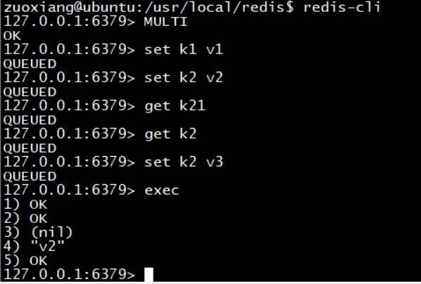
放弃事务：
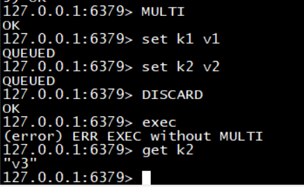
事务的三个特性
- 单独的隔离操作：事务中所有命令都会序列化、按顺序的执行。事务在执行的过程中，不会被其他客户端发送来的命令请求所打断
- 没有隔离级别的概念：队列中的命令没有提交之前都不会实际的被执行，因为事务提交前的任何指定都不会被实际执行，也就不存在”事务内的查询要看到事务里的更新，在事务外查询不能看到“这个让人十分头痛的问题
- 不保证原子性：redis同一个事务中如果有一条命令执行失败，其后的所有命令仍然会被执行，没有回滚
9.Redis发布订阅
是什么：进程间通信的一种消息通信模式：发送者（pub）发送消息，订阅者（sub）接收消息一般消息中间件不会用redis去做。
- Redis自带的PUB/SUB机制，即发布-订阅模式。这种模式生产者(producer)和消费者(consumer)是1-M的关系，即一条消息会被多个消费者消费，当只有一个消费者时即可以看做一个1-1的消息队列，但这种方式并不适合题主的场景。首先，数据可靠性的无法保障，题主的数据最终需要落库，如果消息丢失、Redis宕机部分数据没有持久化甚至突然的网络抖动都可能带来数据的丢失，应该是无法忍受的。其次，扩展不灵活，没法通过多加consumer来加快消费的进度，如果前端写入数据太多，同步会比较慢，数据不同步的状态越久，风险越大，可以通过channel拆分的方式来解决，虽然不灵活，但可以规避。这种方案更适合于对数据可靠性要求不高，比如一些统计日志打点。
- Redis的PUSH/POP机制，利用的Redis的列表(lists)数据结构。比较好的使用模式是，生产者lpush消息，消费者brpop消息，并设定超时时间，可以减少redis的压力。这种方案相对于第一种方案是数据可靠性提高了，只有在Redis宕机且数据没有持久化的情况下丢失数据，可以根据业务通过AOF和缩短持久化间隔来保证很高的可靠性，而且也可以通过多个client来提高消费速度。但相对于专业的消息队列来说，该方案消息的状态过于简单(没有状态)，且没有ack机制，消息取出后消费失败依赖于client记录日志或者重新push到队列里面。
10.Redis的主从复制
主机数据更新后根据配置和策略，自动同步到备机的master/slaver机制，Master以写为主，Slave以读为主
主要是读写分离（主库可以写/读，从库只能读不能写）、容灾恢复
怎么玩
1.配从（库）不配主（库）
2.从库配置：slaveof 主库ip 主库端口
(1) 每次与master断开之后，都需要重新连接，除非你配置进redis.conf文件
(2) info replication可以查看当前端口的角色
3.修改配置文件细节操作
4.常用三招：
(1)一主二仆
(2)薪火相传：上一个slave可以是下一个slave的master，slave同样可以接收其他slaves的连接和同步请求，那么该slave作为了链条中下一个master，可以有效的减轻master的写压力 中途变更转向：会清除之前的数据，重新建立拷贝最新的。slaveof 新主库ip 新主库端口
(3)反客为主：主库挂了从库手动变成主库 slaveof no one
复制原理
Slave启动成功连接到master后会发送一个sync命令，Master接到命令启动后台的存盘过程，同时收集所有接收到的用于修改数据命令，在后台进程执行完毕之后，master将传送的整个数据文件到slave，以完成一次完全同步。
全量复制：而slave的服务在接收到数据库文件数据后，将其存盘并加载到内存中。
增量复制：master继续将新的所有收集到的修改命令依次传给slave，完成同步，但是只要是重新连接master，一次完全同步（全量复制）将被自动执行。
哨兵模式
反客为主的自动版
能够后台监控主机是否故障，如果故障了根据投票数自动将从库换成主库使用步骤：
（1）调整结构：6379带着6380、6381
（2）自定义的/myredis目录下新建sentinel.conf文件，名字绝对不能错。配置哨兵，填写内容：sentinel monitor 被监控数据库名字（自己起名字）127.0.0.1 6379 1
上面最后一个数字1，表示主机挂掉后slave投票看让谁替成主机，得票数多后成为主
（3）启动哨兵
（4）正常主从演示
（5）原来的Master挂了
（6）投票新选
（7）重新主从继续开工，info replication 查看
（8）问题：如果之前的master重启回来，会不会双Master冲突？不会，会成为新老大的slaver